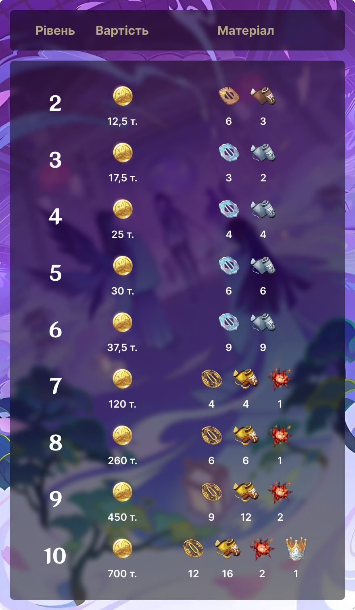

Райден Шьоґун
Електро архонт та богиня вічності
Райден Шьоґун – це втілення дивовижі й жахливої сили грому, вона – найвища правителька Шьоґунату Інадзуми. Маючи у своєму розпорядженні силу блискавки, панна віддає всю себе самітницькій гонитві за вічністю.

історія
Людське ім’я: Райден Ей
Божествене ім’я: Вельзевул
Бог: Вічності
Стихія: Електро
Регіон: Інадзума
Рідкість: 5 зірок
Зброя: Спис
День народження: 26 червня
Історія 1
Справжнє ім'я Шьогуна Райден - Райден Ей. Вона на власні очі бачила все, чим тисячоліття жертвувала Інадзума заради руху вперед. Найщасливіші її роки залишилися у минулому, а старі друзі перетворилися на ворогів. Зрештою, у неї не залишилося причин брати в руки меч. "Рух вперед приносить втрати". За словами Ей, це непорушний закон для всього світу, а час – його безжальний виконавець. Найквітніша нація людей розпалася відразу.Лі Юе, найбільш довгоживуче місто з усіх, змушений був попрощатися з Гео Архонтом. Вітер розставання задув із вивороту часу. Слава Шьогуна Райден ще не відлунала, але настане день, через сотні чи тисячі років, коли Інадзума втратить захист свого Архонта. Як і личить воїну, Ей завжди пильно стежить за ворогом, і навіть якщо це загроза, невловима наче плин часу, вона поспішить знайти зброю, яким завдасть удару у відповідь. Для неї це – вічність. Тільки вічність дозволить усьому зупинитися, і Інадзума ніколи не буде знищено. «Так залишимось у спокої, поки все добре... Залишимось у вічності».
Історія 2
Навіть якщо істота в тлінному тілі прагне вічності, їй не подолати тривалості свого життя. Ей пригнічувала обмеженість
часу, поки одного разу волею доль вона не пізнала таємну техніку. З її допомогою можна було створювати майстерних
маріонеток, які не відрізняються від справжніх людей. Так маріонетка могла стати ідеальною копією Ей. Вона могла б
подолати межу терміну життя та вічно захищати Інадзуму. Але чи легко створити копію Архонту? Ей провела незліченну
кількість експериментів, викинула безліч невдалих моделей, витратила неймовірну кількість часу та ресурсів. Завдяки
своїй одержимості та волі воїна, вона створила ідеальну маріонетку. Новонароджена Шьоґун Райден мовчки слухала, як Ей
розповідала їй все про себе, про неї, про них. Ось воно, майбутнє Інадзуми, перенесене на чудове креслення. Лише одне
питання вона поставила Ей:
- Залишивши тіло, назад ти повернутися не зможеш. Ти впевнена, що не пошкодуєш про це?
- Твоє існування – моя відповідь.
Ей стала свідомістю, прихованою у мечі. Так виникло царство евтюмії.
Історія 3
Перш ніж Райден Ей стала шьогуном, вона була самураєм і стежила за виконанням наказів своєї попередниці. Попередній Електро Архонт, Райден Макото, була сильним бійцем, і Ей займалася справами війни. Але окрім битв випадали й хвилини відпочинку, коли Ей з друзями грали в каруту, сидячи під сакурою. Через свій характер Ей завжди була найневмілішим гравцем. Вона ніколи не перемагала і не отримувала призів, які Кіцуне Сайгу спеціально готувала для переможця. Тому Ей заглибилася у вивчення карути з таким самим зосередженням, що вкладала у тренування бойовим мистецтвам. То вона дошкуляла Макото або Мікосі Тіє проханнями пограти з нею, то місячними ночами поодинці читала вголос вірші на картах. І ось настав день, коли під сакурою Ей перемагала супротивника за супротивником. Навіть могутній тенгу був повалений після важкої битви, і нарешті вона стала чемпіонкою. Ей видала тріумфальний вигук, і перемога її була зустрінута сміхом друзів. Тільки тоді вона зрозуміла, що втратила самовладання, і, опустивши руки, повернулася до свого звичайного холодного вигляду. Друзі, звичайно, зовсім не глузували з неї. Вони розуміли її характер і те, як вона намагалася завоювати перше місце. А кіцуне Сайгу, сяючи усмішкою, піднесла їй тістечка: «От і приз переможцю, хоч це й просто домашні тістечка. Не думала, що це тебе так схвилює. Що ж, насолоджуйся трофеями своєї перемоги сповна». Її навряд чи можна було назвати жадібною до солодощів, але, як самурай, вона твердо вірила, що, програвши, неодмінно треба відігратися. Ці тістечка були скоріше підтвердженням її прагнення перемоги. Але незабаром її холодне обличчя знову змінилося усмішкою. Тістечка були прекрасні - як і смак перемоги. А її незграбні спроби приховати посмішку були чудовим видовищем для її друзів. Досі Ей часто згадує ту сакуру. Хоча вона давно не ходила до неї... і ніхто більше не сидить під деревом, Ей все одно хоче, щоб час зупинився назавжди.
Історія 4
Ей досі пам'ятає, як Макото любила пейзажі Інадзуми, її кухню та історії її мешканців, і як вона любила розповідати Ей про все це. Хоча обидві вони добре розуміли, що таке ерозія, Макото була не схожа на Ей, яка частіше турбувалася про майбутнє. Макото була зосереджена на сьогоденні. «Якщо ми знаємо, що «зараз» - це лише швидкоплинна тінь, ми повинні їм насолоджуватися». Тоді Ей лише гірко посміхнулася, розуміючи, що вона, кагемуся, ще більш старомодна, ніж Шьоґун Райден. Вона подумала, що має навчитися бути більш невимушеною, як Макото. Але день змін прийшов дуже швидко, заставши Ей зненацька. Не встигла вона схаменутися, як у руках уже стискала клинок, переданий Райден Макото, що вмирає. Цього дня кагемуся стала справжнім Шьогуном Райден. Саме тоді Ей по-справжньому відчула весь той біль, що несла ерозія. Час невблаганно продовжив свій хід, і навіть цей меч, ця сакура... все живе в Інадзумі згасне в неї на очах. Це основа Інадзуми, це те, що Шьоґун Райден має захищати. "Звідси видно, що думати наперед - не безглузде заняття, і не марна самовпевненість". Вона прийняла рішення, і життя звільнилося від плоті, вічність опустилася на тлінний світ.
Історія 5
Якось уночі, під час медитації, Райден Ей опинилась у чудовому баченні. Здавалося, між небом і землею залишилася тільки вона і, ніби існувала у відображенні, інша «вона». Голос маріонетки, як зітхання, проник у її вуха: «Нечисленні бажання людей похитнули вічність, що ти вирішила опустити на цей світ. Тепер ти – мій ворог». Створюючи маріонетку, Ей думала і про небезпеку. Вона вважала, що можливо все, а в гіршому випадку... вона сама якось може стати загрозою для вічності. Але вона мала продовжувати. Вона мала досягти вічності. Вона не могла дозволити зовнішнім силам зупинити її. Слова маріонетки були тим, про що вона давно вже запитувала себе: «Ти вважаєш, ти нинішня права, тому що більше сповнена рішучості, ніж ти минула. Чи не так? Але чи справді ти почала мислити інакше? Чи тебе незворотно виїдає ерозія?». Їхні обличчя були однаковими, але вони говорили про різну волю. Битва з собою – зі своїм минулим – була неминуча. Але не сьогодні. Ей добре розуміла, що ще не готова. Її серце було чисте, і вона воліла б нічого не змінювати, але, почувши плач свого народу, вона була змушена прокинутися. Небо над дзеркалом більше не було ясним, і колись безмовні зали сповнились криками ворон. Наближається світанок, і самурай має взяти до рук меч. Цей сон був таким справжнім, але він зник наче тінь.
Історія 6
Перед тим, як назавжди перейти до Царства евтюмії, Ей тривалий час думала про те, де зберегти Серце Бога. Вона більше не
потребувала його, але не так просто знайти місце для такої цінності. Спочатку вона хотіла переробити його в пристрій для
подачі енергії, але, хоч би що вона робила, всі її техніки виявилися безсилими змінити Серце Бога. Потім вона згадала
про лукаву розумницю Яе Міко. Незважаючи на легковажність Кіцуне, вона підходила Ей як ніхто інший. Почувши прохання,
Міко не забула пожартувати:
- А ти не боїшся, що я просто його продам?
- Чи не знати тобі цінності Серця Бога. Захочеш продати – зажадаєш рівноцінного обміну, а знайти таку річ непросто.
І справді, навіть надумай Яе продати Серце Бога, не в її звичках залишатися в накладі при угоді. Так двоє нерозлучних
подруг дійшли згоди. Розуміючи, що Ей на душі, Яе взяла дороге Серце Бога. Це твоя ідея, не моя. Дивись не пошкодуй про
це».
геймплей
Райден дуже гнучко підходить для ролі основного та другорядного дамагера, а також підтримки. Героїня регенерує енергію союзникам, підвищуючи їхню бойову ефективність і дозволяючи набирати в артефактах більше важливих статів, не концентруючись на відновленні енергії. За рахунок своєї Елементальної навички Ей може грати з карману. Вибух стихій активує Мусо но хітотаті протягом деякого часу.

Звичайна атака

Заряджена атака
Атака в падіні
Елементальна навичка
Вибух стихій
Ефект вибуху стихій
Анімація очікування
Анімація очікування
піднесення
Для піднесення Райден вам необхідно зібрати ягоди амакумо, котрі можна знайти на острові Сейрай. Також вам знадобиться цуба яка випадає з Нобуші та Кайрагі. Знайти їх можна всюди на території Інадзуми. Обов’язковою складовою піднесення є громові намистини. ЇЇ ви можете отримати, при перемозі над босом — Втілення грози. Звідти ж є шанс випасти камню аметист Ваджрада, котри також є необхідним для піднесення Райден.

таланти

Джерело
Чудо: Просвітлювальна лиха днина
Таємне мистецтво: Справжнє вчення мрії
Незліченні бажання
Вища сутність
Полювання на все найкраще
Для покращення талантів вам знадобиться книги про “Світло”, які можна добути у маєтку Тайшань в СР/СБ/НД. Починаючи з 7 рівня вам необхідно зібрати Розплавлений момент. Його можна отримати після перемоги над щотижневим босом Синьйорою, яка знаходиться в Замковій вежі в Інадзумі на Острові Нарукамі. Щоб підвищити талант до найвищого 10 рівня вам необхідно мати Корону Прозріння. ЇЇ можна отримати під час івентів або із завдань деяких ігрових режимів.
сузір'я
Прокляття лихої днини
Зв'язок, що розрізає сталь
Відбиток минулого
Присяга правильності
Сходження Шьоґуна
Покровителька бажань

картки
«Священний заклик сімох» – постійний ігровий режим, доданий у версії 3.3. Він є покроковою колекційною картковою грою на двох, заснованою на механіках Genshin Impact. Мета гри - зібрати власну карткову колоду і перемогти в поєдинку, здолавши всіх персонажів супротивника. Гравці можуть запрошувати зіграти партію деяких ігрових та неігрових персонажів, а також грати проти інших мандрівників, проте нагород за PvP-дуелі не передбачено. Гравці можуть розблокувати навчальне завдання Приходьте зіграти у Священний заклик сімох після досягнення Рангу пригод 32 та завершення завдання Архонтів Пролог. Глава III: Пісня про драконову свободу.
Джерело
Звичайна атака
Завдає 2 од. Фізичного шкоди.

Чудо: Просвітлювальна лиха днина
Елементальна навичка
Викликає 1 Око Бурхливого Судження.
Око Бурхливого Судження
Фінал: завдає 1 од. Електро Демеджу.
Зарядів: 3
Коли цей Посіпака знаходиться на полі бою: Вибух Стихій ваших персонажів завдає
+1 од. демеджу.
Таємне мистецтво: Справжнє вчення мрії
Вибух стихій
Завдає 3 од. Електро Демеджу. Всі ваші персонажі отримують 2 од. Енергії.
Чакра Десідерата
Пасивний талант
(Пасивна) Коли починається битва, персонаж отримує статус Чакра Десідерата.
Чакра Десідерата
Після того, як інші ваші персонажі застосовують Вибух Стихій: отримує 1 стек Наміру.
(Макс. 3)
Коли персонаж із цим статусом застосовує Таємне мистецтво: Справжнє вчення мрії:
витрачає всі стеки Наміру та завдає
додатково +1 од. демеджу на кожний спожитий стек.
Бойова дія: Коли ваш активний персонаж — Райден Шьогун, використайте цю картку. Після того, як Райден Шьоґун отримує цю картку, вона застосовує навичку Таємне мистецтво: Справжнє вчення мрії одразу однократно.
Коли Райден, обладнана цією карткою, застосовує Таємне мистецтво: Справжнє вчення мрії, ця навичка завдає додатково 1 од. Демеджу на кожний стек Наміру.
(Цю картку можна додати в колоду, лише якщо в ній є Райден Шьоґун.)
Помічник
Фінальна фаза: наносить Електро шкоду, 1 од.
Коли цей помічник на полі бою: вибух стихії вашого персонажа завдає 1 од. шкоди більше.
Робить усі ваші Елементальні дайси сумісними з Елементом активного персонажа.
(Для додання цієї картки у свою колоду, вона має налічувати щонайменше 2 персонажів з Інадзуми)
Один з ваших персонажів, що ще не заповнив шкалу Енергії, отримує 1 од. Енергії (приорітет на активного персонажа).
(Для додання цієї картки у свою колоду, вона має налічувати щонайменше 2 Електро персонажів).
Створює 1 Електро дайс.
(Для додання цієї картки у свою колоду, вона має налічувати щонайменше 2 Електро персонажів).

регіон
Інадзума
Ізольований архіпелаг на далекому сході Тейвату. Подолайте безкінечні грози та ступіть на острови червоного клену й вишневого цвіту. На вітряних узбережжях і несамовитих скелях, у лісах і горах, сповнених таємниць, спостерігайте вічність, яку прагне Її Світлість — Всемогутня Нарукамі Оґошьо. Інадзума - один із семи регіонів Тейвату. Це архіпелаговий регіон, що поклоняється Райден Шьоґун, електро Архонтці, яка також є головою управлінського органу цього регіону — Шьоґунату Інадзуми. Інадзума розташована приблизно 4 км на південний схід від гавані Ліюе і межує з Темним морем.
Мапа регіону
Плейлист регіону
Для більшого погруження у атмосферу регіону ви можете послухати плейліст з пісня.